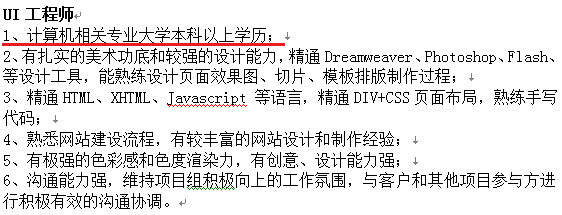
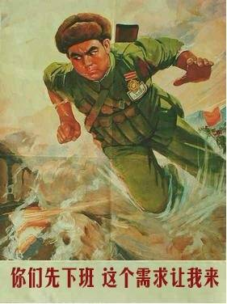
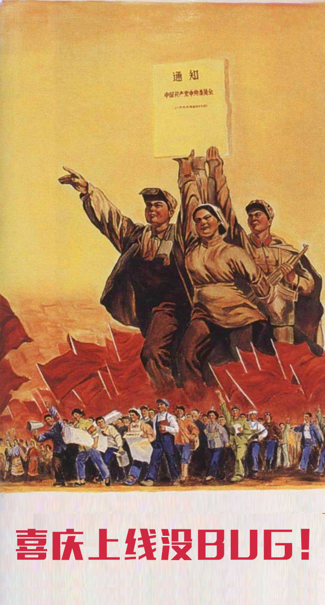
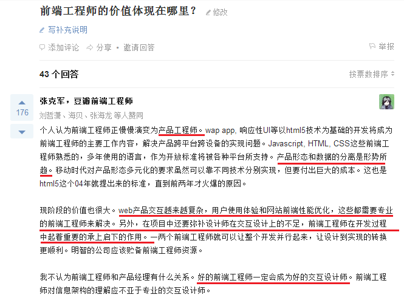
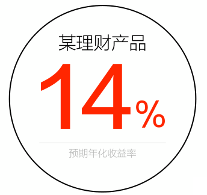
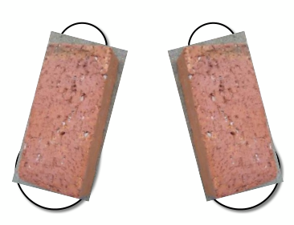

2014 年终总结
Annual Summary
胡海波 (PaddingMe)
2015-01-21
Who I Am ?
2014年06月22日 入职
实习（7/10）
UI 工程师 —— 乐知行实习生招聘
UI 工程师
软件开发工程师 !

前端『攻城狮』
Front-end Enginner

Front-end Enginner
可能还是一只 『前端汪』
作为『前端汪』，
每一次敲下键盘的时候，
心里都在想着这个页面全世界的人们都可以看到，
也许那里没有公路，也许那里没有办法烤茄子，撸串子，
但是却可以看到我的代码，
想到这里，抬头 45 度仰望天空，眼角不禁湿润了。
其实我只是想做一个安静的『切图仔』
一入前端深似海，别人当我切图仔！


What I Do ?
别人眼中可能是这样:

别人眼中还可能是这样:
其实是这样:

是这样：
还有这样：
还这样：
偶尔还有这样：
还有这样的时候：
其实，其实，是：

Just kidding above.
Don't take the seat to the number.
What I Have Done ?
| 黄村一小 | 二十中永泰校区 | 中关村一小 |
| 立新小学 | 一零一中学 | 一零一中学怀柔分校 |
| 乐知行平板教学子网站 | 首师大二附中 OA | 北京园林学校 |
| 永乐店中学 | 中央音乐学院附中 | 玉泉小学 |
| 上海崇明中学 | 上海崇明中学 8 子网站 | 乐知行案例展示子网站 |
| 太平庄小学 | 北京二十中中学 | N+ 改进 |
What I Acquire ?
成为一个土豪的可能性；- 切图速度越来越快；
- Freemarker 写到手抽筋；
- 对 HTML 语义化(Semantic)、
可用性(Accessibility)
有更多的了解和认识； - 对用户体验有更多的思考。
What I Thought ?
什么是前端工程师
Web 前端开发工程师，主要职责是利用 (X)HTML/CSS/JavaScript/Flash 等各种 Web 技术进行客户端产品的开发。完成客户端程序（也就是浏览器端）的开发，开发 JavaScript 以及 Flash 模块，同时结合后台开发技术模拟整体效果，进行丰富互联网的 Web 开发，致力于通过技术改善用户体验。
--『来自·百度百科』
什么是前端工程师
前端是一种介于程序和设计之间的契合，拥有程序严谨逻辑的同时也存在设计的感性，前端是设计师的代码实现，更是一门艺术。
--『来自·keelii』
什么是前端工程师
一入前端深似海，绝知此事要躬行。
有人对前端嗤之以鼻，有人觉得高端大气，
对我而言，只是一件有趣的事儿。
和有趣的人，一起做有趣的事，这是我憧憬的美好人生。
--『来自·PaddingMe』
前端工程师的价值体现在哪里？
——产品工程师(软件产品工程师)

用户体验不重要吗？
稀缺性产品
紧急不重要
重体验型产品在市场早期会火一阵，
当市场成熟了以后或者人们的口味发生了变化的时候，
它曾经没有重视的体验问题都会显露出来。 —— 点头猪
对用户体验的探索没有尽头 —— 罗永浩
以解决问题为核心——妥协
我们是为了什么而妥协的？
时间
- 工期，推广实效，老板要求，人力资源不足······
- 代码的生命周期
- 时间是高于技术和体验的不可控因素
以解决问题为核心——妥协
任何形式意义上的开发本质都是为了解决用户所产生的问题，
只要问题能够快速解决，方向正确，
且符合（用户 VS. 设计师 VS. 产品）的审美需求，
有些事情可以妥协和讨论，不做毫无意义的『死磕』，
不做毫无意义的争论，把更多的时间花在解决问题上。
以解决问题为核心——造轮子?

在没有合适解决方案的时候再造轮子
- SliderJS
- Fullpage.js
- modal.js
- lazyload
- ...
不为了造轮子而造轮子

工程师 or 设计师
- 项目组里没有真正的设计师，也没有设计概念模型，
产品只不过是硬件、软件或数据库的一种反映。 - 心智模型能与该产品匹配的唯一用户就是工程师。
如果受众不是工程师，那么产品开发就有麻烦了。

态度和热情
对己严要求，对别人不苛刻。
保持热情，换位思考。
说服别人，或者被别人说服。
勿忘初心，方得始终
码农螺丝钉随便的人- Coding changes the wolrd.
- Only the paranoid survive.
What I Could Do ?
个人技术的提升
写出更优雅的代码
Talk is cheap, show me the code.


学点设计
不会设计的前端工程师不是好的产品经理。
效率？成本！
学习更多自动化、工程化的软件和工具；
培养工程思维，提高效率，节约时间成本 。
Work Together
- 建立前端代码规范；
- 制定网站建设标准；
- 规范网站建设流程；
- 前端组件化与模块化；
- 组织/参加一些技术分享；
- More...

<thank-you>
Powered By reveal.js